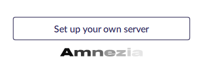

Установка с помощью - Run Setup Wizard
РусскийRu

От VPS провайдера на указанную почту придут данные для подключения
Это может занять некоторое время.
Там должны быть:
| Server IP: | 192.565.ххx.xxx |
| User name: | root (или другое) |
| Password или SSH-key: | 2f9legf2... |
Установите приложение Amnezia и запустите его.

На первом экране внизу выберете Set up your own server
Далее внесите данные для подключения и нажмите Connect
Если имя пользователя не указано,
впишите root
*если вы меняли порт для SSH, укажите его через двоеточие после IP
**если вместо пароля у вас SSH-ключ, выберете “Connect using SSH key”
Выберите вариант установки
Выберете
Run Setup Wizard (мастер установки)
Run
Setup Wizard это простая
установка.
Далее вам нужно будет выбрать наиболее
подходящий вариант защиты.
При выборе Configure VPN protocols manually
вы сможете самостоятельно выбрать
протокол из списка и дополнительные настройки
*Если вы хотите воспользоваться ручной настройкой или с первого подключения установить другие
VPN протоколы, такие как Wireguard или IKEv2 (IPsec)
используйте пошаговую инструкцию к
Configure VPN protocols manually, вы так же сможете добавить эти протоколы
позднее, после установки.
Run Setup Wizard (Мастер установки)
Вам необязательно использовать протокол, который вы сейчас установите,
После установки Вы сможете удалить ненужные протоколы и добавить любые новые.
Если в вашем регионе очень высокий уровень цензуры, заблокированы и сайты и VPN сервисы, советуем с
первого подключения выбирать High censorship level, так как в случае обнаружения у вас VPN, адрес вашего
VPS могут заблокировать.

High censorship level. Высокий уровень цензуры. Предназначено
для случаев когда Вы не хотите,
чтобы ваш трафик определялся как общение с VPN. Будет установлен контейнер с
OpenVPN и Cloak.
Medium censorship level. Средний уровень цензуры, сравнительно
гибкое решение на случай,
когда блокируются сайты, но не VPN. В данном случае на сервер будет установлен контейнер с
OpenVPN и ShadowSocks.
Low censorship level. Низкий уровень цензуры. Чтобы просто
получить VPN для шифрования трафика
(классический VPN). В данном случае на сервер будет установлен контейнер с
OpenVPN.
*имейте ввиду, что как правило, чем более защищенное соединение, тем ниже скорость трафика
Далее Вам предложат выбрать для каких сайтов вы хотите использовать VPN
Выберете Run Setup Wizard (Мастер установки)

Вы можете использовать VPN для всех сайтов, для всех кроме выбранных, или только для выбранных.
Вы также сможете вернуться к этой настройке после подключения.
Готово! Вы создали свой персональный VPN
Теперь вы можете обходить блокировки сайтов, защитить
свои данные,
и без ограничений делиться вашим VPN с теми, кому вы
доверяете, а также добавлять новые протоколы и еще
многое другое.
Если вы хотите большо узнать о функционале Amnezia или у вас остались вопросы обратитесь
к нашим подробным инструкциям, зайдите в раздел часто задаваемых вопросов -
FAQ
,
или свяжитесь с нами по почте support@amnezia.org.